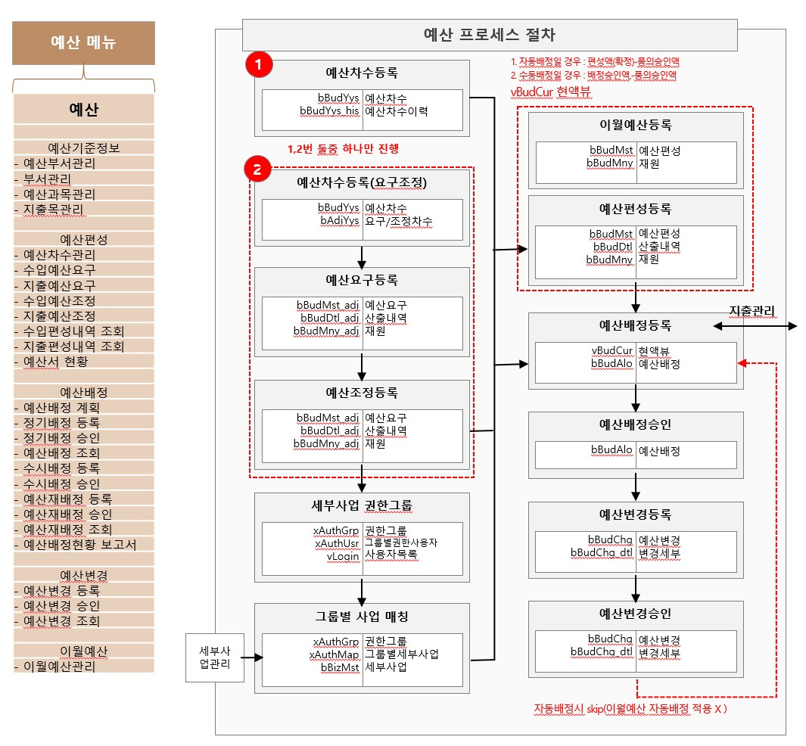
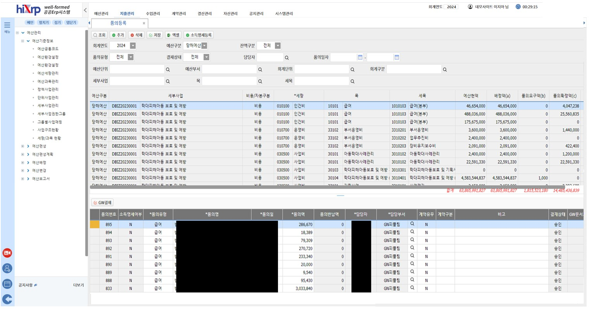
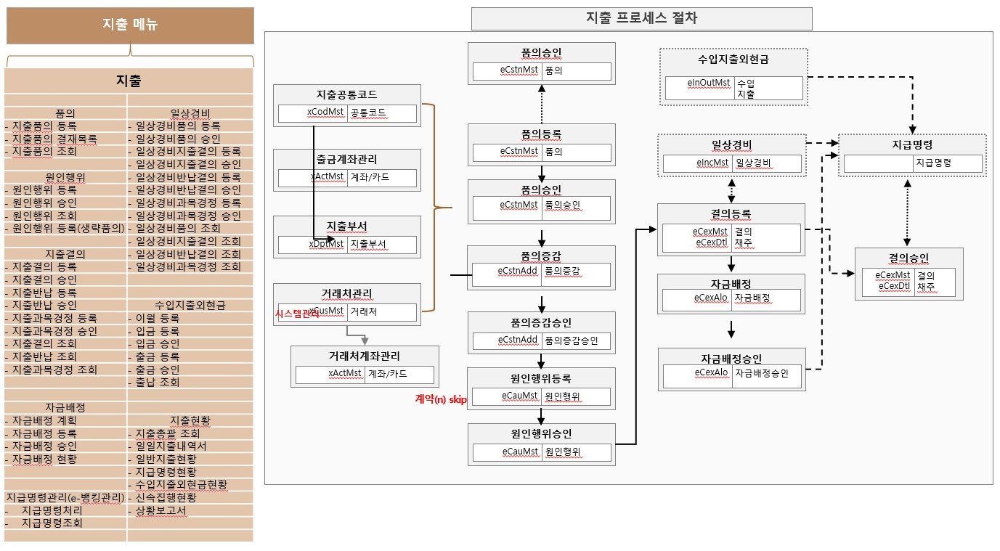
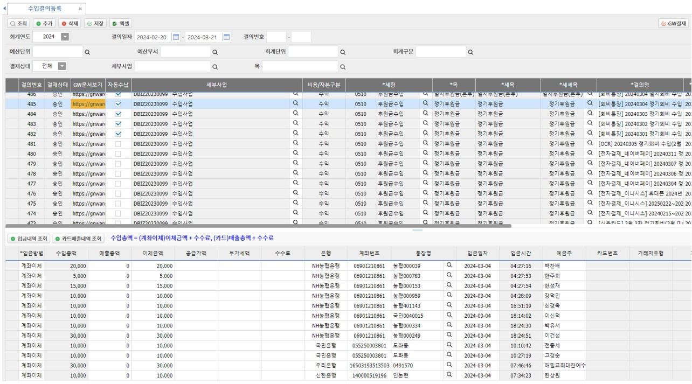
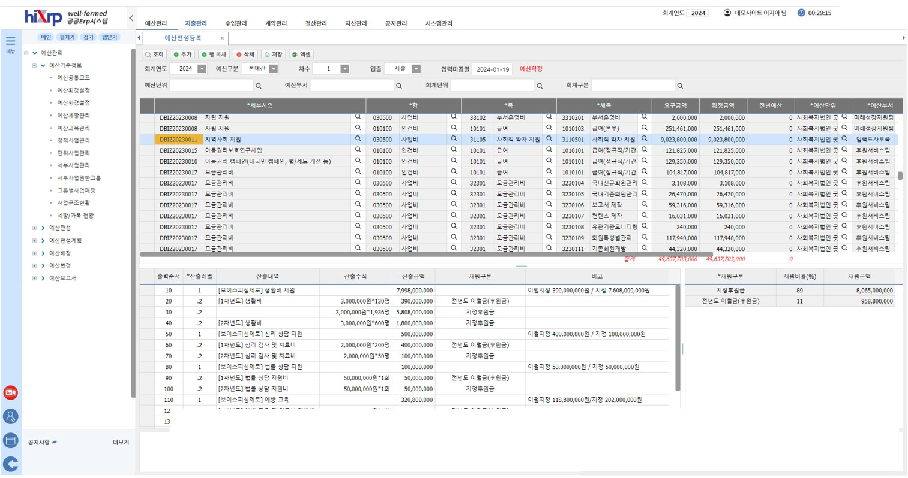
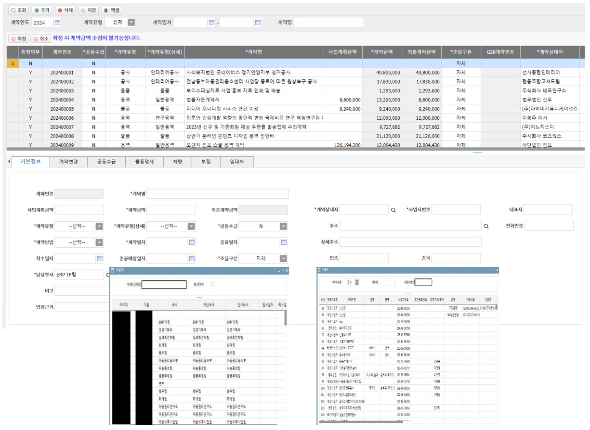
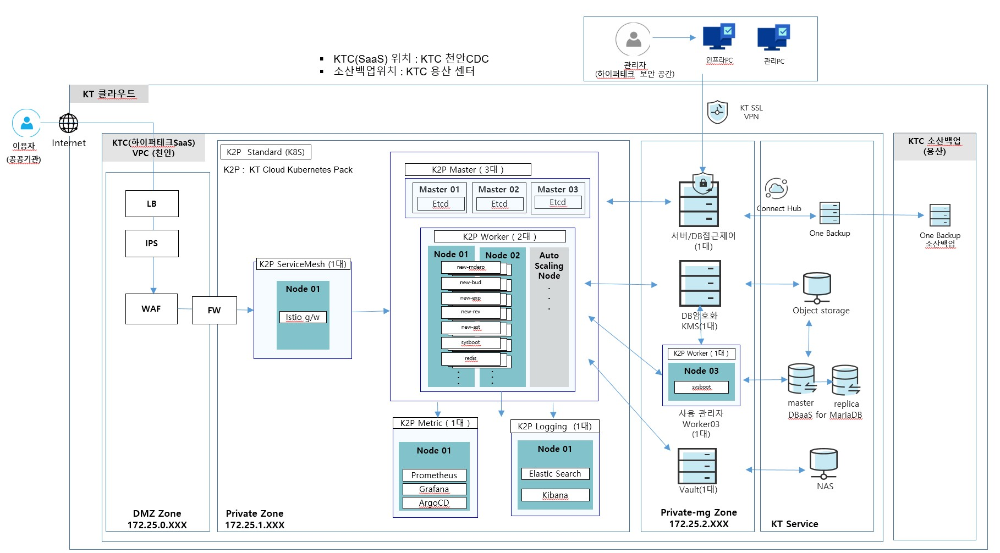
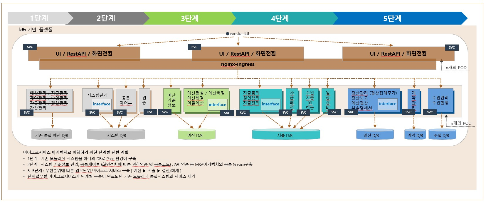
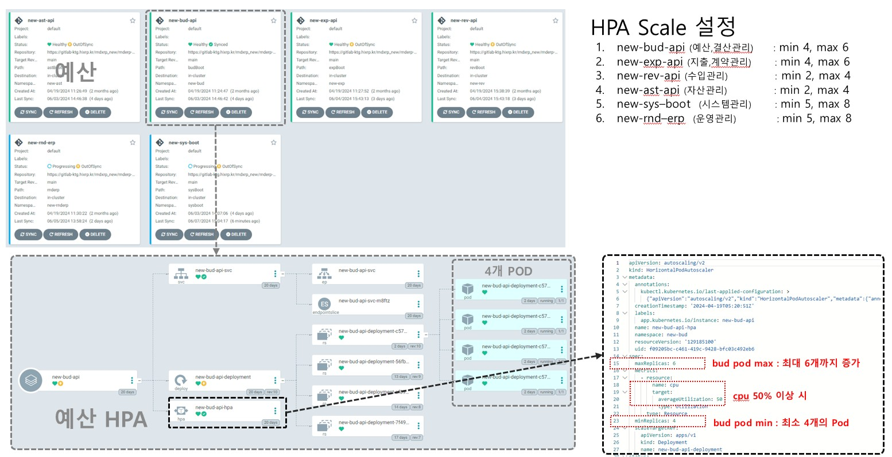

예산회계 MSA 전환 시스템
예산 편성 등록
예산 편성이란 조직(국가, 지방자치단체, 기업 등)이 차기 회계연도의 목표를 달성하기 위해 필요한 재원을 미리 예측하고, 이를 어디에 얼마나 쓸지 계획을 세워 확정하는 일련의 과정을 의미합니다.


지출 품의 등록
지출원인행위, 지출, 지급의 단계를 거쳐 예산을 집행하며, 이를 증빙하기 위해 지출결의서를 사용합니다.


수입결의 등록
「누구에게, 왜, 언제까지, 얼마를 받아야 하는지」를 검토하여 기관장의 승인을 받는 절차입니다.
예: 공공 시설 대관료 10만 원을 받을 일이 생겼을 때, 「A업체에게 10만 원을 받아야 함」이라고 시스템에 등록하고 고지서를 발행하는 행위 자체가 수입결의의 핵심입니다.

고정자산 대장
자산 = 부채(빌린 돈) + 자본(내 돈)
즉, 현재 우리 기관이 보유한 모든 자산은 누군가에게 빌렸거나(부채), 처음부터 우리 소유(자본)였던 것들의 합계입니다.

계약 등록
서로의 의무와 권리를 명확히 하기 위해 맺는 법적인 약속을 의미합니다.
돈을 쓸 근거(지출원인행위)나 돈을 받을 근거(수입원인행위)를 확정하는 행위입니다.

시스템 구성도
kt 공공 클라우드 k8s 네트워크 및 HW 구성도

예산회계 MSA 전환 — 단계별 아키텍처
애플리케이션을 업무기능 단위로 분해하고, 변화가 적은 업무는 기존 아키텍처를 유지한 채 단계적으로 전환·개발합니다.

HPA 스케일링
HPA(Horizontal Pod Autoscaler)는 부하 증가에 따라 파드(복제) 수를 늘리는 수평 확장을 뜻합니다.
이미 떠 있는 파드에 CPU·메모리만 더 주는 방식(VPA 등)과는 목적이 다릅니다.
